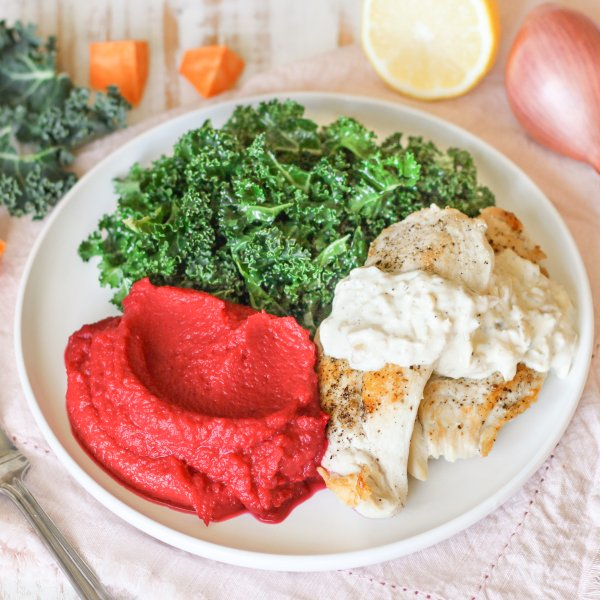

Creamy Thyme Chicken with Sweet Potato-Beet Mash & Dijon Kale Salad

Total Time
40 min
Nutrition (per serving)
643.7 kcalCalories
46.4 gProtein
39.2 gCarbs
34 gFat
Full nutrition table
| Calories | 643.7 kcal |
| Total fat | 34 g |
| Saturated fat | 13.8 g |
| Trans fat | 0.7 g |
| Cholesterol | 181.5 mg |
| Sodium | 370.2 mg |
| Carbohydrates | 39.2 g |
| Fiber | 6.3 g |
| Sugars | 11.9 g |
| Protein | 46.4 g |
| Potassium | 1427.8 mg |
| Calcium | 174.1 mg |
| Iron | 3.1 mg |
| Vitamin A | 16832.6 IU |
| Vitamin C | 64.1 mg |
| Vitamin D | 1.7 IU |
Cookware
Ingredients
- 2 mediumbeets
- 1 ½ lbchicken breasts, boneless skinless
- 1 (8 oz) blockcream cheese
- 2 clovesgarlic
- 1 bunchkale
- 2lemons
- 2shallots
- 1 lbsweet potato
- black pepper
- Dijon mustard
- extra virgin olive oil
- salt
- thyme, dried
Steps
- Wash, dry, peel, and trim beets. Medium dice, transfer to a large pot, and cover with hot water (from the tap). Cover and bring to a boil over high heat.2 medium beets
- Meanwhile, wash and dry the remaining fresh produce.1 lb sweet potato
2 lemons
1 bunch kale - Peel, trim, and medium dice sweet potatoes; place in a medium bowl and set aside.
- Once the water in the pot is boiling, reduce to a simmer and cook until beets are starting to soften, about 10 minutes. Add sweet potatoes and cook until veggies are soft, 10-12 minutes more.
- While the beets are cooking, juice lemons into another medium bowl. Add oil, Dijon, salt, and pepper; whisk to combine the dressing and set aside.4 tsp extra virgin olive oil
4 tsp Dijon mustard
½ tsp salt
¼ tsp black pepper - Preheat a large skillet over medium-high heat.
- While the skillet heats up, pat the chicken dry with paper towels and place on a cutting board. Holding a knife parallel to the cutting board, cut the chicken in half horizontally to form thin cutlets. Season with salt and pepper on both sides.1 ½ lb chicken breasts, boneless skinless
1 tsp salt
½ tsp black pepper - Once the skillet is hot, add oil and swirl to coat the bottom. Add cutlets to the skillet and pan-fry until cooked through and golden brown, 3-4 minutes per side. Remove to a plate and loosely cover with aluminum foil.4 tsp extra virgin olive oil
- Meanwhile, using a clean cutting board, fold kale leaves in half lengthwise and slice off the stems. Chop or tear leaves into bite-sized pieces and add to the bowl with the dressing; toss to combine the salad and set aside.
- Peel and mince garlic and shallots.2 cloves garlic
2 shallots - Return the skillet (with cooking juices), to medium heat; add garlic, shallot, and thyme. Cook, stirring occasionally, until shallot has softened, 2-3 minutes.1 tsp thyme, dried
- While the shallot is cooking, cut cream cheese into small pieces.1 (8 oz) block cream cheese
- Add cream cheese and water to the skillet; stir until melted and combined, 1-2 minutes (if needed, add additional water, 1 tablespoon at a time, to reach a saucy consistency). Return chicken to the skillet, along with any accumulated juices; stir to combine the chicken and sauce. Remove from heat.¼ cup water
- When the beet and sweet potato are ready, drain in a colander and return to the pot; add salt and pepper, then use a hand (or regular blender) to purée until smooth. (Add water, if needed, a few tablespoons at a time, to reach desired consistency.)½ tsp salt
¼ tsp black pepper - To serve, divide sweet potato-beet mash, chicken, sauce, and salad between plates. Enjoy!